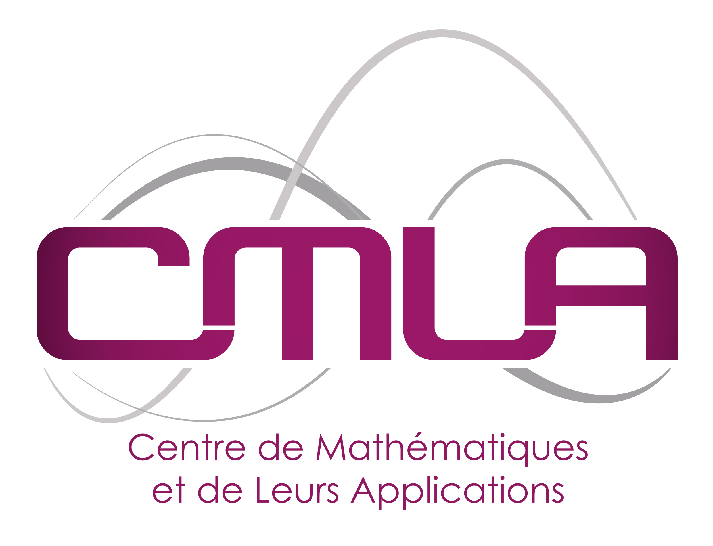

Contact
CMLA ENS Paris-Saclay
61 Avenue du Président Wilson
94235 Cachan, Cedex
Phone ***
adrien.le-coent_@_ens-cachan.fr
https://adrienlecoent.github.io/
Acknowledgements
Thanks to the University Of Colorado Boulder for the tutorial that helped me learn html/css.
Thanks to Manon Esnouf for the amazing photo !
Thanks to Jonathan Vacher for letting me use his web page template.
Under the supervision of Florian de Vuyst, Ludovic Chamoin, and Christian Rey.
English title: Guaranteed Control Synthesis for Switched Space-Time Dynamical Systems
French title: Synthèse de Contrôle Garanti pour des Systèmes Dynamiques Spatio-Temporels à Commutation
Main research fields:
Control of switched systems
Symbolic methods for control synthesis
Partial differential equations
Model order reduction
Distributed (composisitional) control synthesis